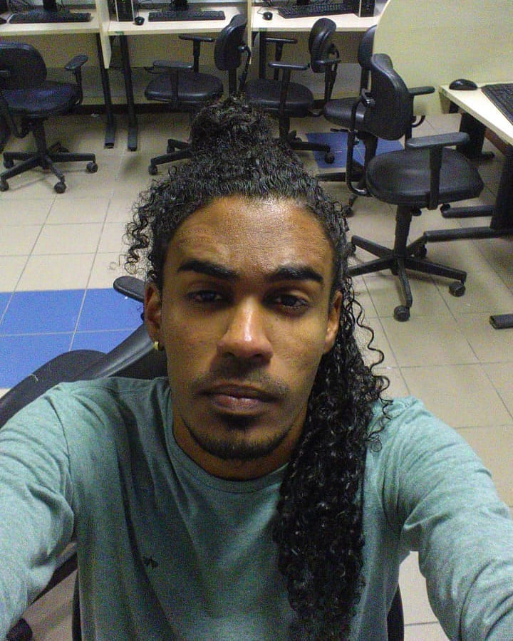

Leonan Batista
Networks and Programming
Técnico em TI e Desenvolvedor, apaixonado por inovações e estratégias para crescimento profissional. Aqui você alguns projetos em que tive uma participação significativa.
Saiba Mais


Técnico em TI e Desenvolvedor, apaixonado por inovações e estratégias para crescimento profissional. Aqui você alguns projetos em que tive uma participação significativa.
Saiba Mais
Olá, sou o Leo e atuo como Técnico de Informática e freelancer em algumas áreas tecnológicas, com foco em desenvolvimento. Algumas de minhas experiências são como suporte técnico para empresas de automação comercial, designer gráfico e publicação de livros para o setor público de meu estado, e tem alguns anos que atuo de forma autônoma prestando serviços tecnológicos para meus clientes. Agora, estou cursando uma faculdade de Redes de Computadores e continuo realizando freelancers na área da programação em conjunto com uma equipe de amigos. Acredito que subir nos ombos de gigantes é sinônimo de crescimento profissional e vital para todos. Com isso, busco sempre aprender com as oportunidades da vida, sempre sabendo que viver bem é viver em harmonia com o social e em dia com a civilidade.
Um bom domínio dos fundamentos e experiência prática com as habilidades técnicas são pilares indispensáveis
Experiência em C# para desenvolvimento de aplicações escaláveis, utilizando estruturas de dados e orientação a objetos

Java e Spring Boot para desenvolvimento de aplicações web, APIs RESTful/Microservices e integração com bancos de dados estáveis

Experiência em consultas, manipulação eficiente de tabelas e garantia de integridade dos dados em bancos relacionais
Prática em Git: branchs, merge, resolução de conflitos e colaboração em equipe para um histórico de código eficiente.
As imagens dos projetos redirecionam para os repositórios
Aplicação para um estúdio de audiovisual. Essa base foi criada em código puro e posteriormente continuada em outro projeto maior.
Site de Linhares visando a divulgação de notícias.
O site está no ar e se encontra no domínio a seguir.
Clique para acessar -> www.sitedelinhares.com.br
Trabalhei neste projeto dando manutenções e atualizações utilizando
PHP, Laravel, SQL e Git.
Aplicação protótipo fullstack usando Java Spring, JPA, ReactJs, Axios, TypeScript, Flyway, Insomnia, Lombok e PostgreSQL.

Site/Aplicativo visando a Gestão de uma escola. Neste projeto fui responsável por tasks com ReactJs, MongoDb + LoopBack.

Ponto de Venda feito para comércio. Posteriormente, a base do software foi reaproveitada para uso próprio em negócios da família. Primariamente foi codificada em .NET C# puro com auxílio do Visual Studio + Banco de dados em SQL com SQL Server.

Sistema chamador de senha + impressão de fichas em JavaScript. Programa feito com foco em clínicas, agências e estabelecimentos que usam desse tipo de filtragem em seu atendimento.

Dashboard em C# para controle de senhas e fichas do sistema de filas. Programa feito com intenção de melhorias futuras para fins de empreendimento.
Xadrez com JavaScript, algoritmo minimax e API do Chess.com;
O minimax examina uma árvore de movimentos possíveis com base em seu
nível(fácil, médio, difícil). Por usar recursividade, torna-se lento
em alguns momentos. Foi implementado uma página de
estatísticas com a API do chess.com em formato JSON utilizando XMLHttpRequests.
É possível fazer upload de fotos para usar no perfil de jogador.
Este projeto foi baseado em outras criações para o projeto final
CS50 oferecido pela HarvardX.
Clique para acessar o jogo:
https://leobatista3.github.io/Chess-Js/